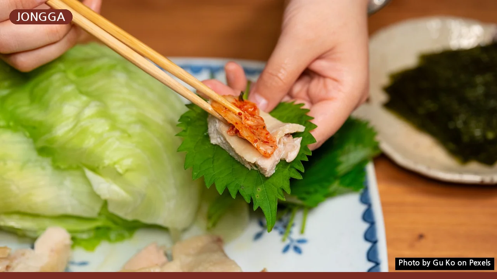
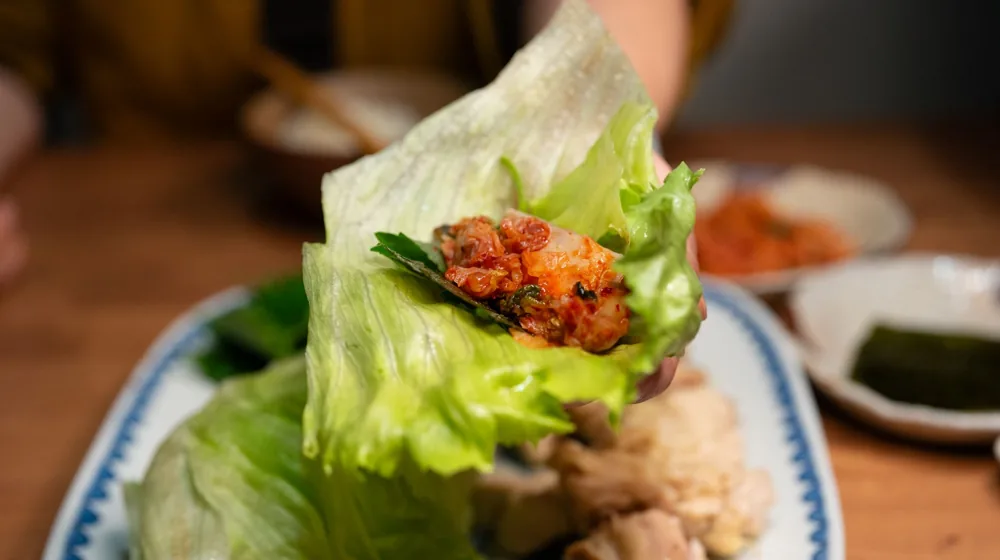

안동 종가음식, 어디서부터 맛볼까? 초보자를 위한 특별 가이드
사진: Gu Ko / Pexels (무료 이미지, 출처 표기)
안동 종가음식, 왜 특별할까요?

안동 종가음식은 단순히 맛있는 한 끼 식사를 넘어, 수백 년간 이어져 온 안동 지역 종가(宗家)의 생활 문화와 철학이 담긴 귀한 음식입니다. '종가'는 한 가문의 맏이로 이어지는 집안을 뜻하며, 이곳에서 대대로 내려오는 음식은 조상을 기리는 제례(祭禮)와 손님을 맞이하는 접빈(接賓)의 과정에서 발전해왔습니다.
안동 종가음식은 인공 조미료를 거의 사용하지 않고, 안동 지역에서 나는 신선한 제철 식재료를 활용해 맛의 깊이를 더합니다. 소박하지만 정갈하고, 재료 본연의 맛을 살리는 것이 특징입니다. 이는 음식 하나하나에 깃든 정성과 기다림의 미학을 보여줍니다.
초보자를 위한 안동 종가음식 대표 메뉴 3가지
안동 종가음식에 처음 도전하는 분들을 위해 부담 없이 접할 수 있는 대표 메뉴 세 가지를 소개합니다. 이 음식들을 통해 종가음식의 진면목을 경험해 보세요.
- 건진국수: 메밀이나 밀가루 반죽을 얇게 밀어 칼국수처럼 썰어 삶은 뒤, 찬물에 헹궈 국물을 부어내는 국수입니다. 닭고기나 쇠고기로 낸 맑고 시원한 육수에 고명으로 닭고기, 달걀 지단, 호박 등을 올려 정갈하게 즐길 수 있습니다.
- 헛제삿밥: 제사를 지내지 않고도 제사 음식처럼 먹는다는 뜻에서 이름 붙여진 비빔밥입니다. 주로 명절이 아닌 평소에 조상이 그리울 때 제사 음식을 차려 먹던 풍습에서 유래했습니다. 갖가지 나물과 전, 탕국을 밥 위에 올린 후 간장 양념에 비벼 먹습니다.
- 안동식혜: 일반적인 단맛의 식혜와 달리, 엿기름과 고춧가루, 생강, 무, 찹쌀 등을 넣어 만듭니다. 붉은 빛을 띠며 알싸하고 매콤한 맛이 나는 것이 특징입니다. 겨울철이나 명절에 소화를 돕는 음료로 즐겨 마십니다.
안동 종가음식을 맛보는 방법: 식당과 체험 프로그램
안동 종가음식을 직접 맛보고 경험하는 가장 좋은 방법은 전문 식당을 방문하거나 체험 프로그램에 참여하는 것입니다. 2026년 10월 현재 안동 지역에는 여러 종가음식 전문점과 체험 프로그램이 운영되고 있습니다.
종가음식 전문점은 일반 식당과는 달리 사전 예약제로 운영되는 곳이 많고, 코스 요리 형태로 제공되는 경우가 흔합니다. 종가의 역사와 전통을 느낄 수 있는 고택에서 식사를 할 수 있는 곳도 있어 특별한 경험을 선사합니다.
보다 깊이 있는 경험을 원한다면 종가음식 만들기 체험 프로그램에 참여해 보세요. 한국국학진흥원이나 안동시 관광정보센터 홈페이지를 통해 관련 정보를 얻을 수 있습니다. 직접 음식을 만들고 맛보면서 종가음식의 가치를 더욱 생생하게 느낄 수 있을 것입니다. 정확한 사항은 공식 홈페이지나 해당 기관에서 다시 확인하시길 권장합니다.
성공적인 안동 종가음식 체험을 위한 팁
안동 종가음식을 더욱 만족스럽게 즐기기 위한 몇 가지 팁을 알려드립니다.
첫째, 방문 전 반드시 사전 예약하세요. 종가음식점은 소규모로 운영되거나 특별한 준비가 필요한 경우가 많아 예약이 필수입니다. 둘째, 메뉴에 대한 정보를 미리 확인하고 방문하세요. 종가마다 특색 있는 메뉴와 스토리가 있으므로, 취향에 맞는 곳을 선택하는 것이 좋습니다.
셋째, 음식의 배경과 스토리를 함께 이해하면 맛이 더욱 깊어집니다. 종가음식은 단순한 음식이 아니라 오랜 역사와 전통이 깃든 문화유산이기 때문입니다. 넷째, 제철 식재료로 만든 음식을 선택하세요. 종가음식은 제철 재료를 중시하므로, 계절별로 다른 별미를 맛볼 수 있습니다.
종가음식 방문 시 알아두면 좋은 예절과 주의사항
안동 종가음식을 체험할 때는 몇 가지 예절과 주의사항을 숙지하는 것이 좋습니다. 종가라는 특수한 공간에서 그들의 문화를 존중하는 태도를 보이는 것이 중요합니다.
- 예약 시간 엄수: 종가음식점은 정해진 시간에 맞춰 정성껏 음식을 준비합니다. 예약 시간을 철저히 지켜 다른 손님이나 종가에 피해를 주지 않도록 합니다.
- 조용한 분위기 유지: 종가나 고택에서 식사하는 경우, 조용하고 경건한 분위기를 유지하는 것이 예의입니다. 큰 소리로 대화하거나 소란을 피우지 않도록 주의합니다.
- 사진 촬영 시 주의: 음식 사진은 괜찮지만, 종가 내부나 제기(祭器) 등 민감할 수 있는 부분을 촬영할 때는 미리 허락을 구하거나 신중하게 접근해야 합니다. 플래시 사용은 자제하는 것이 좋습니다.
- 음식을 남기지 않기: 종가음식은 정성껏 만든 음식입니다. 음식을 남기지 않고 감사하는 마음으로 전부 먹는 것이 좋습니다.
🔗 이 글도 함께 보면 좋아요: 종가음식 프라이빗 다이닝, 가격대별 경험 완벽 비교 가이드
관련 추천 상품
안동 종가음식 밀키트, 안동 전통 간식 관련 인기 상품 보러가기
이 포스팅은 쿠팡 파트너스 활동의 일환으로, 이에 따른 일정액의 수수료를 제공받습니다.